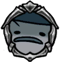

Shrumal Ogre
 Huge fungal creature. Attacks by spitting corrosive venom and slamming its body into foes.Are these hulking things beasts or are they mushroom? I cut one in half and peered inside to find out, but could find no answers in its soft, stinking insides.
Huge fungal creature. Attacks by spitting corrosive venom and slamming its body into foes.Are these hulking things beasts or are they mushroom? I cut one in half and peered inside to find out, but could find no answers in its soft, stinking insides.

x 45
x 56
 x 8
x 8The Shrumal Ogre is a large, ground enemy found within the Fungal Wastes, which sports both a long and short range attack.

 If the player is at a distance, it will launch a barage of four infection globs, which deal damage on contact, and leave small pools of damaging goo on the floor for a time.Otherwise, it will start banging its head on the ground in front of it, while moving slowly towards the player. It will slam its head down seven times, or stop of the player gets behind it.Its cap is strong, and prevents the Shrumal Ogre from taking damage from above.
While possible to hit during its head slam attack, it is safer to wait this attack out, or supplementing ones nail damage with spells from a distance during this time.Dodge through its glob attacks, and hit it a couple times before backing off as it prepares for its head slab attack.It is vulnerable to downward strikes while performing its head slam, but this can be difficult to execute as it is hard to get close enought to hit it while avoiding being hit in turn.
If the player is at a distance, it will launch a barage of four infection globs, which deal damage on contact, and leave small pools of damaging goo on the floor for a time.Otherwise, it will start banging its head on the ground in front of it, while moving slowly towards the player. It will slam its head down seven times, or stop of the player gets behind it.Its cap is strong, and prevents the Shrumal Ogre from taking damage from above.
While possible to hit during its head slam attack, it is safer to wait this attack out, or supplementing ones nail damage with spells from a distance during this time.Dodge through its glob attacks, and hit it a couple times before backing off as it prepares for its head slab attack.It is vulnerable to downward strikes while performing its head slam, but this can be difficult to execute as it is hard to get close enought to hit it while avoiding being hit in turn.
Shrumal Ogres can be found the following areas: